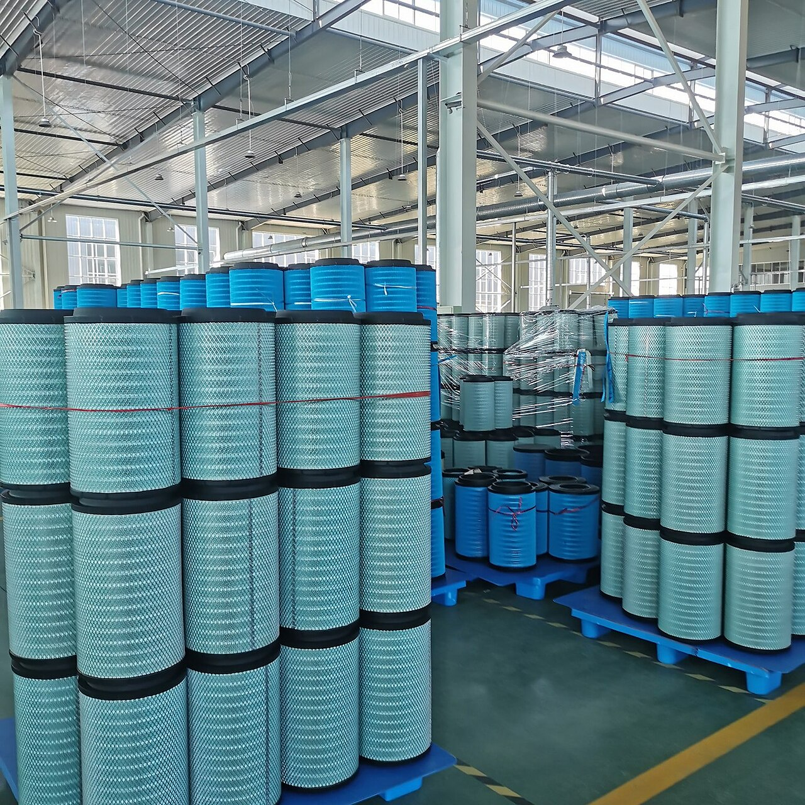

Understanding the Automotive Spare Parts Market

Every vehicle on the road depends on spare parts. Filters wear out, brake pads thin down, batteries lose charge, bulbs fail, and suspension components take years of punishment from rough roads. The automotive spare-parts market exists to keep those vehicles running — and in Pakistan, much of that trade happens in concentrated markets where hundreds of shops sell parts side by side. For a buyer, that concentration is both an advantage and a challenge: the part you need is probably in the market somewhere, but finding the right shop, the right part, and a fair deal takes knowledge.
This guide explains how the spare-parts market works, what the main types of parts are, how genuine and compatible parts differ, and how buyers and businesses can use an organised directory to find vendors with less wasted time.
What the spare-parts market includes
The spare-parts market covers everything that replaces a worn, damaged or failed component of a vehicle. That includes routine consumables — engine oil filters, air filters, cabin filters, spark plugs, brake pads, bulbs and batteries — and larger components such as radiators, alternators, suspension parts, gearboxes and body panels. It also includes accessories and the services that go with parts: fitting, maintenance, battery testing, oil changes and engine tuning.
The trade is organised around wholesale and retail. Wholesalers supply shops in bulk; retailers sell to vehicle owners and workshops, often with fitting. Some businesses do both. Many shops specialise — in a single vehicle brand, in a single system such as brakes or suspension, or in a single product line such as batteries. Others are general stockists. Knowing which kind of shop you need is the first step in any search.
Buyers in this market are not only private vehicle owners. Workshops buy parts every day for the vehicles they repair. Transport operators keep fleets running. Dealerships and authorised service centres source parts for their own customers. Each buyer has different priorities: a workshop needs reliable supply and correct fitment; a private owner usually needs one part, fitted correctly, at a fair price.
Genuine versus compatible parts
One of the most important distinctions in the spare-parts market is between genuine parts and compatible parts.
Genuine parts are made by, or made for, the vehicle manufacturer and sold through its authorised channels. They are designed for a specific vehicle model, and they carry the manufacturer's branding and packaging. Their main advantage is fitment: a genuine part is made to match the vehicle it was designed for, and it is usually backed by the manufacturer's own quality control and warranty arrangements where those apply.
Compatible parts — also called aftermarket or non-genuine parts — are made by independent manufacturers to fit a vehicle. They are not made by the vehicle manufacturer. Their quality varies: some independent manufacturers produce parts to a high standard, and some produce to a low price. A compatible part can be a sensible choice for an older vehicle, for a part that wears out frequently, or when the genuine part is unavailable. It can also be a poor choice when the part is safety-critical and the quality of the replacement is uncertain.
Neither category is automatically right or wrong. What matters is that the buyer knows which one is being offered, and that the choice is made openly. A reputable vendor will say plainly whether a part is genuine or compatible, and will not present a compatible part as genuine. Buyers should ask the question directly, check the packaging, and keep the receipt and any warranty paperwork that comes with the part.
Understanding the main spare-parts categories
Spare parts fall into a small number of broad categories. Knowing them helps a buyer describe what is needed and helps a vendor point to the right shelf.
Engine and filtration
Engine air filters, oil filters and cabin filters, along with engine components such as pistons, gaskets and belts. Filters are the most frequently replaced parts in this category, and they are consumables: they are designed to be changed at regular intervals.
Braking
Brake pads, brake discs (rotors), brake shoes, calipers and brake fluid components. Braking parts are safety-critical, and their condition should never be guessed at. A buyer who is unsure about a brake problem should have the vehicle inspected before buying parts.
Suspension and steering
Shock absorbers, springs, bushes, ball joints and steering components. These parts affect ride comfort and, more importantly, how the vehicle handles and stops.
Electrical parts
Alternators, starter motors, batteries, spark plugs, bulbs and wiring components. Electrical faults can be hard to diagnose, and a part should be tested before it is replaced where that is possible.
Cooling, lighting and transmission
Radiators and cooling components; headlights, indicators and other lighting; clutches, gearboxes and drivetrain parts. These are larger, less frequent purchases, and correct fitment matters more because the parts are model-specific.
Finding the right vendor
Finding a vendor is a practical task with a practical method. Start with the vehicle: its make, model and year, and the exact part that is needed. A part number, a photograph of the old part, or the old part itself all help a shopkeeper identify the correct replacement.
Then narrow the search by specialisation. A shop that specialises in your vehicle's brand, or in the system the part belongs to, is more likely to have the part in stock and to know its alternatives. The vendor directory on this website supports exactly that kind of search: you can search by shop name or main parts, and filter by category, specialization and city, before calling the shop to confirm.
Before travelling, call ahead. Confirm that the part is in stock, ask whether it is genuine or compatible, and ask about fitting. A phone call takes a minute and can save a wasted trip across the city. Where a WhatsApp number is listed, a photograph of the old part can be sent before the visit.
The role of organised business directories
Traditional spare-parts markets work on personal knowledge: regular customers know which lane, which shop and which shopkeeper to ask for. That knowledge is real, but it does not travel well. A new vehicle owner, a visitor from another city, or a workshop opening in a new area starts with nothing.
An organised directory turns that personal knowledge into shared information. It lists shops in one place, in one format, with addresses, contact details and main parts. A buyer can compare vendors before leaving home, and a shop that has served its neighbourhood for years becomes visible to customers it would never otherwise meet. The directory does not replace the market — it makes the market easier to enter.
ASH Spare Parts Market and the wider trade
The shops listed in this directory form part of a wider network of spare-parts markets across Punjab — in Faisalabad, Lahore, Multan and Gujranwala, the four cities covered by this directory. Each of those cities has its own market streets and specialisations: some areas are known for a particular brand, others for wholesale, others for batteries or body parts. The directory reflects that geography, so a buyer can search within the city they can actually reach.
That local character matters. Spare parts are heavy, model-specific and often needed urgently. A buyer usually needs a shop that is reachable today, not a distant warehouse. A directory that is organised by city respects that reality.
Practical guidance for buyers
- Know the vehicle. Make, model, year and engine type — and the part number if you have it.
- Bring the old part or a clear photograph of it, so the shop can match it.
- Ask whether the part is genuine or compatible, and decide on that basis, not on price alone.
- Confirm stock by phone before travelling, and ask about fitting.
- Keep the receipt and any warranty paperwork that comes with the part.
- For safety-critical parts — brakes, steering, suspension — have the vehicle inspected by a qualified person rather than guessing.
Closing
The spare-parts market rewards buyers who arrive prepared and vendors who are easy to find. Genuine and compatible parts both have a place, provided the buyer knows which one is being offered. Categories are easy to learn, and a short phone call before a visit saves time for everyone. Above all, the market works best when its businesses are visible: that is what this directory is for. Browse the vendor directory and use the spare-parts catalog to learn the main component types before your next purchase.